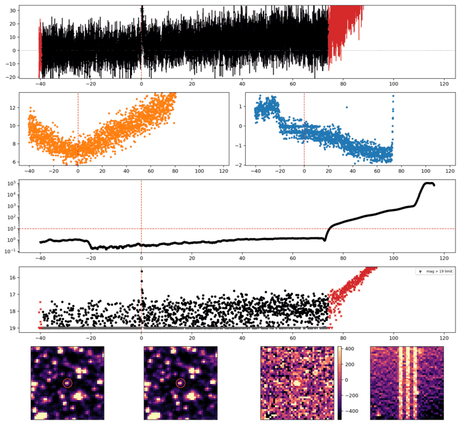
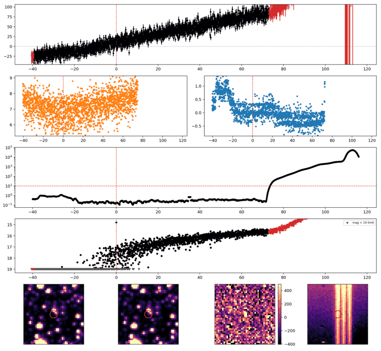
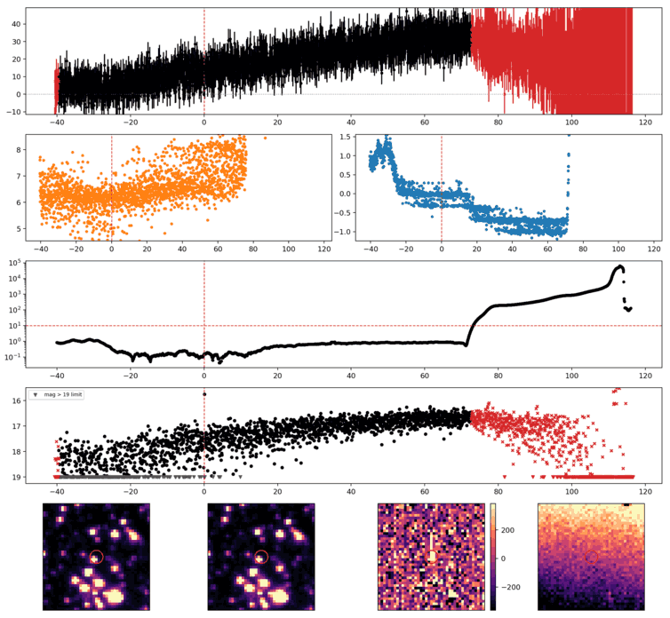
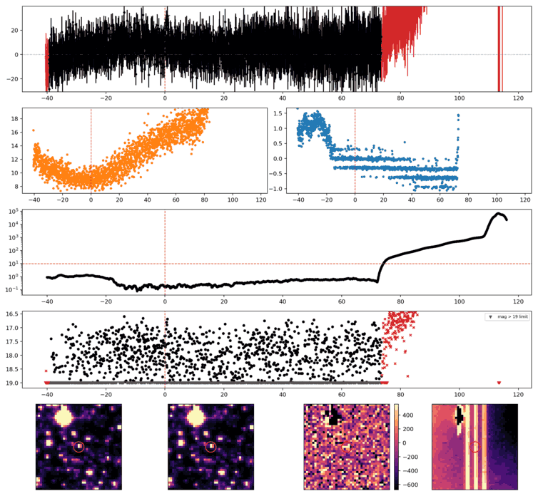
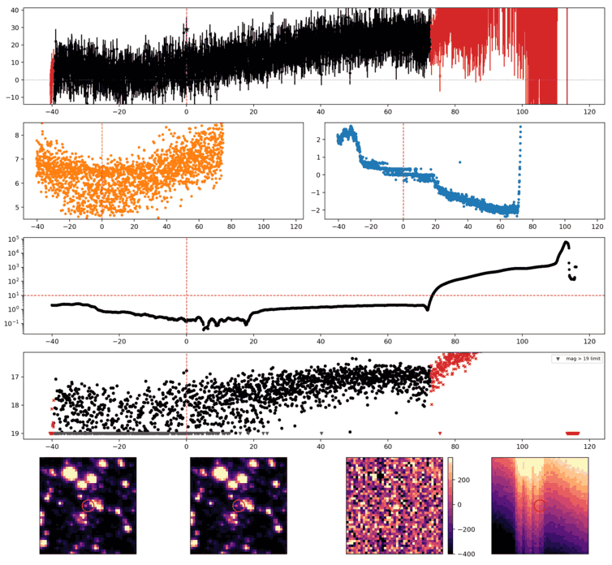
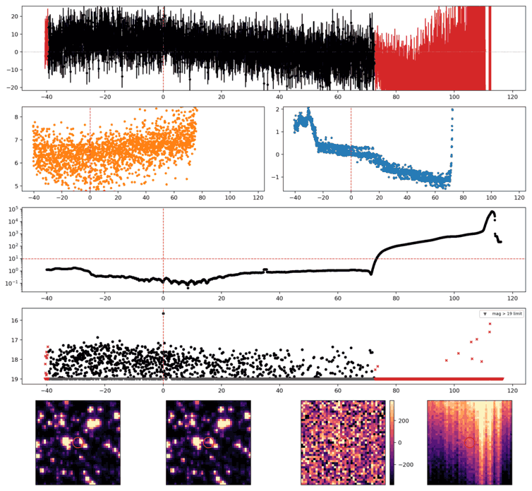
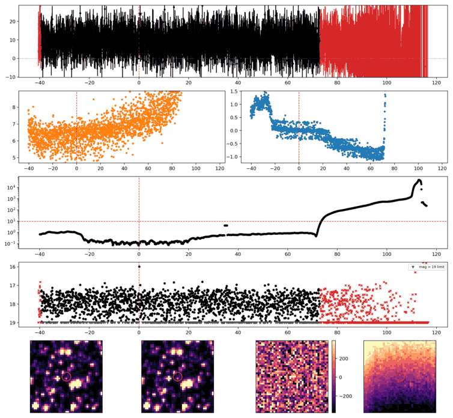
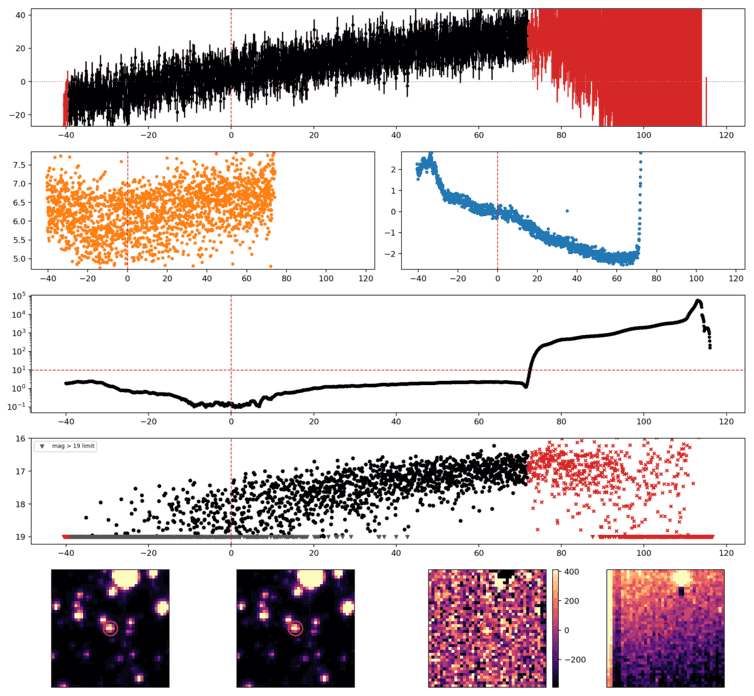
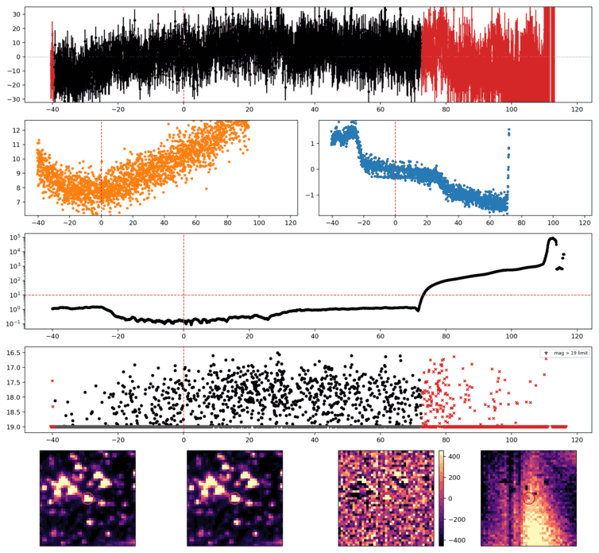
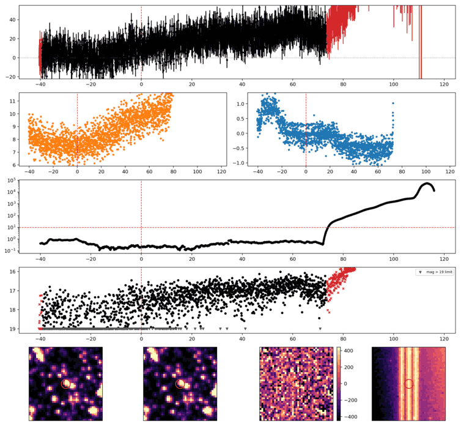

Search centered on refined position (261.1227702, -63.9051418 deg). Gaia coordinates are at J2016.0; proper motions are shown, without epoch propagation. A positional match does not change the candidate flags.
| Source ID / catalog entry | Separation (arcsec) | RA (deg) | Dec (deg) | G (mag) | BP (mag) | RP (mag) | Parallax ± error (mas) | PM RA* ± error (mas/yr) | PM Dec ± error (mas/yr) | RUWE | Variability |
|---|---|---|---|---|---|---|---|---|---|---|---|
| 5814076032942043904 | 1.370 | 261.1223124 | -63.9048189 | 13.064 | 13.407 | 12.551 | 1.624 ± 0.015 | -4.108 ± 0.009 | -18.453 ± 0.012 | 1.101 | NOT_AVAILABLE |
| 5814076032935550336 | 2.861 | 261.1234076 | -63.9043982 | 20.038 | 18.233 | 17.383 | 3.472 ± 0.916 | -0.595 ± 0.678 | -15.480 ± 0.832 | 1.038 | NOT_AVAILABLE |
| 5814076032934863360 | 3.859 | 261.1207385 | -63.9057337 | 19.771 | 19.601 | 18.164 | -0.895 ± 0.475 | 0.498 ± 0.320 | -5.206 ± 0.392 | 1.119 | NOT_AVAILABLE |
Retrieved 2026-10-09T18:20:12.872331+00:00
Representative chosen by category, detection count, then Gaussian S/N. Original measurements and classifications are retained below.

Search centered on refined position (219.2202396, -79.8764435 deg). Gaia coordinates are at J2016.0; proper motions are shown, without epoch propagation. A positional match does not change the candidate flags.
No Gaia DR3 sources found within 5 arcseconds.
Retrieved 2026-10-09T18:20:17.966129+00:00

Search centered on refined position (321.4498813, -78.1941164 deg). Gaia coordinates are at J2016.0; proper motions are shown, without epoch propagation. A positional match does not change the candidate flags.
No Gaia DR3 sources found within 5 arcseconds.
Retrieved 2026-10-09T18:20:24.752603+00:00

Search centered on refined position (240.5936974, -66.8404308 deg). Gaia coordinates are at J2016.0; proper motions are shown, without epoch propagation. A positional match does not change the candidate flags.
| Source ID / catalog entry | Separation (arcsec) | RA (deg) | Dec (deg) | G (mag) | BP (mag) | RP (mag) | Parallax ± error (mas) | PM RA* ± error (mas/yr) | PM Dec ± error (mas/yr) | RUWE | Variability |
|---|---|---|---|---|---|---|---|---|---|---|---|
| 5822189397955044224 | 3.590 | 240.5912331 | -66.8401956 | 20.276 | 20.961 | 19.436 | -0.224 ± 0.514 | -3.119 ± 0.299 | -6.431 ± 0.451 | 1.051 | NOT_AVAILABLE |
| 5822189397955044096 | 4.168 | 240.5913282 | -66.8397436 | 20.743 | — | — | -0.345 ± 1.154 | -2.962 ± 0.916 | -4.734 ± 1.924 | 1.008 | NOT_AVAILABLE |
Retrieved 2026-10-09T18:20:28.677336+00:00

Search centered on refined position (301.3749103, -61.4250311 deg). Gaia coordinates are at J2016.0; proper motions are shown, without epoch propagation. A positional match does not change the candidate flags.
No Gaia DR3 sources found within 5 arcseconds.
Retrieved 2026-10-09T18:20:33.680998+00:00

Search centered on refined position (296.0850620, -71.5144803 deg). Gaia coordinates are at J2016.0; proper motions are shown, without epoch propagation. A positional match does not change the candidate flags.
No Gaia DR3 sources found within 5 arcseconds.
Retrieved 2026-10-09T18:20:40.587612+00:00

Search centered on refined position (272.1756996, -72.0132495 deg). Gaia coordinates are at J2016.0; proper motions are shown, without epoch propagation. A positional match does not change the candidate flags.
No Gaia DR3 sources found within 5 arcseconds.
Retrieved 2026-10-09T18:20:45.259212+00:00

Search centered on refined position (324.7075678, -64.7571746 deg). Gaia coordinates are at J2016.0; proper motions are shown, without epoch propagation. A positional match does not change the candidate flags.
No Gaia DR3 sources found within 5 arcseconds.
Retrieved 2026-10-09T18:20:48.944810+00:00

Search centered on refined position (272.7769975, -61.8463074 deg). Gaia coordinates are at J2016.0; proper motions are shown, without epoch propagation. A positional match does not change the candidate flags.
No Gaia DR3 sources found within 5 arcseconds.
Retrieved 2026-10-09T18:20:52.783344+00:00

Search centered on refined position (205.3865948, -79.0686588 deg). Gaia coordinates are at J2016.0; proper motions are shown, without epoch propagation. A positional match does not change the candidate flags.
No Gaia DR3 sources found within 5 arcseconds.
Retrieved 2026-10-09T18:20:58.375619+00:00